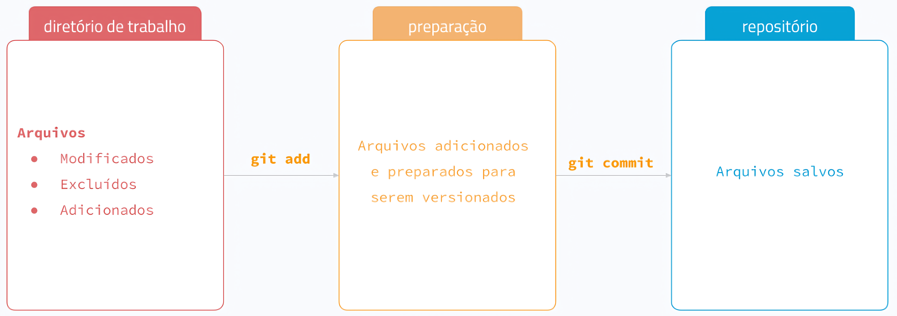

$ git status# On branch master# nothing to commit, working tree clean
9. Versionamento
Vamos criar um arquivo no diretório
Usando a aba Terminal do RStudio
$ touch test.txt
9. Versionamento
git status: mostra o estado do repositório
$ git status# On branch master# Untracked files:# (use "git add <file>..." to include in what will be committed)# test.txt# # nothing added to commit but untracked files present (use "git add" to track)
9. Versionamento
git add: adiciona mudanças após edições (staging area)
$ git add test.txt
9. Versionamento
git add: adiciona mudanças após edições (staging area)
$ git add test.txt -v# add 'test.txt'
9. Versionamento
git add: adiciona mudanças após edições (staging area)
$ git add -Av# add 'test.txt'
9. Versionamento
git add: adiciona mudanças após edições (staging area)
$ git add .
9. Versionamento
git status: mostra o estado do repositório
$ git status# On branch master# Changes to be committed:# (use "git restore --staged <file>..." to unstage)# new file: test.txt
9. Versionamento
git commit: registra as alterações da staging area
Cria um snapshot do repositório, contendo:
Mudanças realizadas nos arquivos
Mensagem descritiva (mensagem do commit)
Metadados do autor, data e identificador único (hash)
9. Versionamento
git commit: registra as alterações da staging area
$ git status# On branch master# nothing to commit, working tree clean
9. Versionamento
Fluxo do versionamento
Diretório de trabalho (working directory): pasta com os arquivos
Preparação (staged area): arquivos adicionados para serem versionados (.git)
Repositório (repository): versão consolidada dos arquivos (.git)

9. Versionamento
Usando a aba Files do RStudio, vamos abrir e editar o arquivo test.txt
Acabo de inserir uma edição ao meu arquivo
9. Versionamento
git status: mostra o estado do repositório
$ git status# On branch master# Changes not staged for commit:# (use "git add <file>..." to update what will be committed)# (use "git restore <file>..." to discard changes in working directory)# modified: test.txt# no changes added to commit (use "git add" and/or "git commit -a")
9. Versionamento
git add: adiciona mudanças após edições (staging area)
On branch masterYour branch is ahead of 'origin/master' by 2 commits.(use"git push" to publish your local commits)nothing to commit, working tree clean


 background-size: 600px background-position: 50% 90%
background-size: 600px background-position: 50% 90% background-size: 600px background-position: 50% 90%
background-size: 600px background-position: 50% 90%